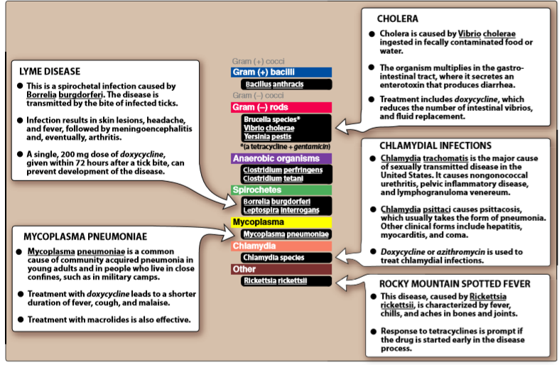
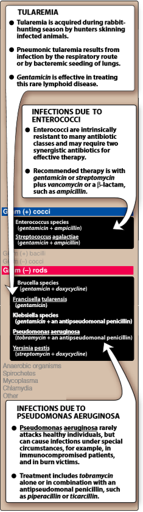
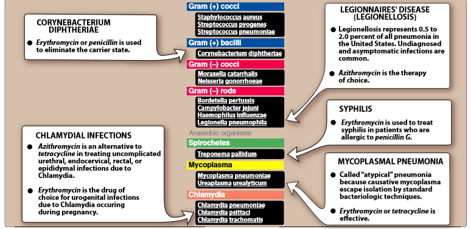
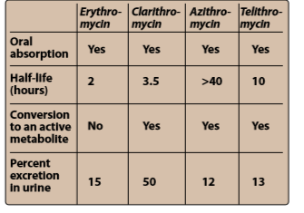

Tetracyclins, amphenicols, aminoglycosides, macrolides, lincosamides
I
⇒ host mitochondrial ribosomes
II.TETRACYLINES
→ four fused rings with a system of conjugated double bonds.
A. Mechanism of action
→ passive diffusion and by an energy-dependent transport protein mechanism → the bacterial inner cytoplasmic membrane
→ Nonresistant strains concentrate the tetracyclines intracellularly
→ binds reversibly to the 30S subunit of the bacterial ribosome → blocking access of the amino acyl-tRNA to the mRNA-ribosome complex at the acceptor site--> bacterial protein synthesis is inhibited
B. Antibacterial spectrum
→ broad-spectrum bacteriostatic
→ against gram-positive and gram-negative
C. Resistance
→ Widespread resistance → limits their clinical use
→ naturally occurring resistance
- (“R”) factor ⇒ inability of the organism to accumulate the drug, thus producing resistance.
- mediated Mg2+-dependent, active effl ux of the drug
- production of bacterial proteins that prevent tetracyclines from binding to the ribosome.
D. Pharmacokinetics
1.Absorption
→ incompletely, absorbed after oral ingestion
→ concomitantly with dairy foods ↓ absorption → [nonabsorsable chelates with calcium ion]
- with other divalent/trivalent cations → [magnesium/aluminum from antacids and iron preparation]

2.Distribution
→ concentrate in liver,kidney,spleen,skin + they bind to tissues undergoing calcification (teehth & bones)
- or tumors [high calcium content]
→ corss the placenta barrier(concetrate in fetal bones and dentition)
3.Elimination
→ concentrate in the liver → metabolized and conjucated to form soluble glucuronides.
→ parent drug are secreted into the bile
→ reabsorbed in the intestine via the enterohepatic circulation and enter the urine by glomerular fifltration [tetra's excreted in the milk]
- obstruction in the bile + hepatic/renal dysfunction → ↑ half-lives
E. Adverse effects
- 1. Gastric discomfort
- Effects on calcifi ed tissues
- Phototoxicity [ tetracycline ,docyxycline and demeclocycline]
- Vestibular problems [usually with Minoclycline,which accumulates in the endolymph of the ear]
- Superinfection[ Overgrowths of Candida (for example, in the vagina) or of resistant staphylococci (in the intestine) may occur.
- Renally impaired patients [with any tetracyclines except of Doxyclyine]
- may aggravate azotemia(↑ normal level of urea or other amino containing compounds in the blood] by interefering with protein synthesis → thus promoting amino acid degradation.
- in pregnant or breast-feeding women or in children less than 8 years of age
AMINOGLYCOSIDES:
→ aeorobic G- bacili → serious toxicity
→ Streptomyces = mycin suffix
→ Micromonospora = micin suffix
→ bactericidical
→ two amino groups joined by a glycosidic linkage to a central hexose (aminocyclitol) nucleus.
→ inhibit bacterial synthesis
A.Mechanism of actions:
→ diffuse through porin channels → their outer membranes
→ oxygen-dependent system → transports the drug across the cytoplasmic membrane.
→ binds to the 30S ribosomal subunit prior to ribosome formation
→ terferes with assembly of the functional ribosomal apparatus and/or cause the 30S subunit of the completed ribosome to misread the genetic code
- [Note: The aminoglycosides synergize with β-lactam antibiotics because of the latter’s action on cell wall synthesis, which enhances diff usion of the aminoglycosides into the bacterium.]
B.Antibacterial spectrum
→ aerobic G- bacilli (including Pseudomonas aeruginosa)
→ often combined with b-lactam (vancomycin) or drug active against anaerobic bacteria
- [Note:are effective against only aerobic organism cuz strict anaerobs does not have oxygen-requiring system drug transport system)
- 
C.Resistance
→ ↓ upatke of the drug when the oxygen-dependent transport system for aminoglycosides is absent
→ plasmid-associated sythesis enzymes (acetyltranferases,nucleotidyltranferases and phosphotranferase) that modify and inactivate aminoglysociside antibiotics.
- [Amikacin is less vulnerable to these enzymes]
D.Pharmacokinetics
1.Administration
→ high polar,polycationic structure prevents adequate absorption after oral amdn.
→ therefore all aminoglycosides (excpet neomycin) give parentally amdn.
→ bacteriocidical effect is concentrate and time dependent
→ postantibiotic effect
→ once-daily dose can be employed → ↓ toxicity / less expensive
→ doses must be calculated based on lean body mass [because the drug does not distribute in fats]
2.Distribution
→ most tissues are low , in tissues is variable, CFS indaquate
→ high concentrations accumulate in renal cortex// endo- & peri- lymph of the inner ear → nephrotoxic & ototoxic potential
→ placenta barrier/fetal plasma/amniotic fluid
E.Adverse effects
→ ototoxicity (vestibular/cochlear) → high peak plasma levels and duration of treatment
- destroyed hair cells in the organ of Corti
→ nephrotoxicity → retention by the proximal tubular cells disrupts calcium mediated transport processes → kidney damage/renal impairment/tubular necrosis which can be irrevesible
→ allergic reactions → contact dermatitis is a common reaction to topically applied neomycin
MACROLIDES:
→ macrocyclic lactone structure + one/more deoxy sugar are attached
→ Erythromycin was the first drug to find clinical application (alternative to Penicillin)
→ newer members Clarithromycin (a methylated form of erythromycin) Azithromycin (having a larger lactone ring ) Telithromycin (semisynthetic derivative of erythromycin)-(ketolide)
→ Ketolides and macrolides have similar antimicrobial coverage
- active against many macrolide-resistant G+ strains.
A.Mechanism of action
→ bind irrevesibly on the 50s subunit → inhibiting trasnlocation steps of protein synthesis
→ bacteriostatic and in ↑ doses bacteriocidical
→ binding site is either identical or closely proximity to that for clindamycin +chloramphenicol
B.Anti-bacterial spectrum
1.Erythromycin
→ drug effective against many of the same organism as Penicillin (may be used in patients allergic to Penicillin)
2.Clarithromycin
→ same as erythromycin + Haemophilus inluenzae
→ higher activity than erythromycin against intracellurlar pathogens (Chlamydia,Legionella,Moraxella,Ureaplasma,Helicobacter pylori)
3.Azithromycin
→ less active against streptococci and staphylococci than erythromycin
→ but is more active against respiratory infenctions
→ prefered fro urethritis caused by Chlamydia
4.Telithromycin
→ similar spectrum to azithromycin
→ due to structual modification within ketolides neutralizd the most common reistance mechanims (methylase-mediated and efflux -mediated_) that m ake macrolides ineffective

C.RESISTANCE
1)The inability of the organism to take up the antibiotic or the presence of an effl ux pump, both of which limit the amount of intracellular drug
2) ) a decreased affi nity of the 50S ribosomal subunit for the antibiotic, resulting from the methylation of an adenine in the 23S bacterial ribosomal RNA;
3) presence of a plasmid-associated erythromycin esterase
→ clarithromycin and azithromycin show cross-resistance with erythromycin, but telithromycin can be eff ective against macrolide-resistant organisms.
D.Pharmacokinetics
1.Administraton
→ erythromycin base is destroyed by gastric acid → enteric-coated tablets or esterifi ed forms → are adequately absorbed upon oral administration
→ Clarithromycin, azithromycin, and telithromycin are stable to stomach acid and are readily absorbed
- Food interferes with the absorption of erythromycin and azithromycin → increase that of clarithromycin
→ Erythromycin distributes well to all body fl uids except the CSF → diffuses into prostatic fluid
→ unique characteristic of accumulating in macrophages.
→ All four drugs concentrate in the liver.
→ Inflammation allows for greater tissue penetration
→ clarithromycin, azithromycin, and telithromycin are widely distributed in the tissues
→ Serum levels of azithromycin are low; the drug is concentrated in neutrophils, macrophages, and fi broblasts
→ Azithromycin has the longest half-life and largest volume of distribution of the four drugs

3,Elimination
→ Erythromycin and telithromycin are extensively meteabolized and inhibit drugs of cytochrome P450 system
- metabolism of drugs such as theophylline and carbamazepine has been reported for clarithromycin
4.Excretion
→ Erythromycin and azithromycin are primarily concentrated and excreted in an active form in the bile
→ Partial reabsorption occurs through the enterohepatic circulation
→ Inactive metabolites are excreted into the urine.
→IN CONTRAST Clarithromycin and its metabolites are eliminated by the kidney as well as the liver, and it is recommended that the dosage of this drug be adjusted in patients with compromised renal function.
E.Adverse effects
1.Epigastic distress
→ common with erythromycin
→ Clarithromycin and Azythromycin seems to be better tolerance but also have GIT distru
2.Cholestatic jaundice
→ estolate form of erythromycin → hypersensitivity
3.Ototoxicity
→ high dosage of erythromycin → transiet deafness
4.Contraindication
→ hepatic dysfunction (with drugs that accumulate in the liver )
→ Telithromycin has the potential to prolongate the QTc interval
5.Intercations
→ Erythromycin,telithromycin,clarithromycin inhibit the hepatoc metabolism of a number of drugs
→ digoxin(antibiotics eliminates species of intestinal flora that oridnarily inactivates digoxin → ↑ reabsorption from the enterohepatic circulation
{kind=link}
{kind=link}
{kind=link}
{kind=link}